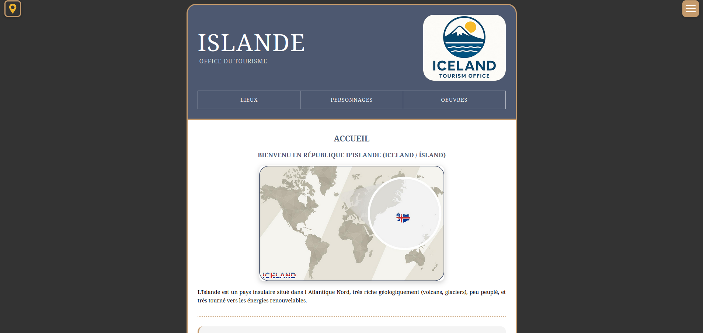
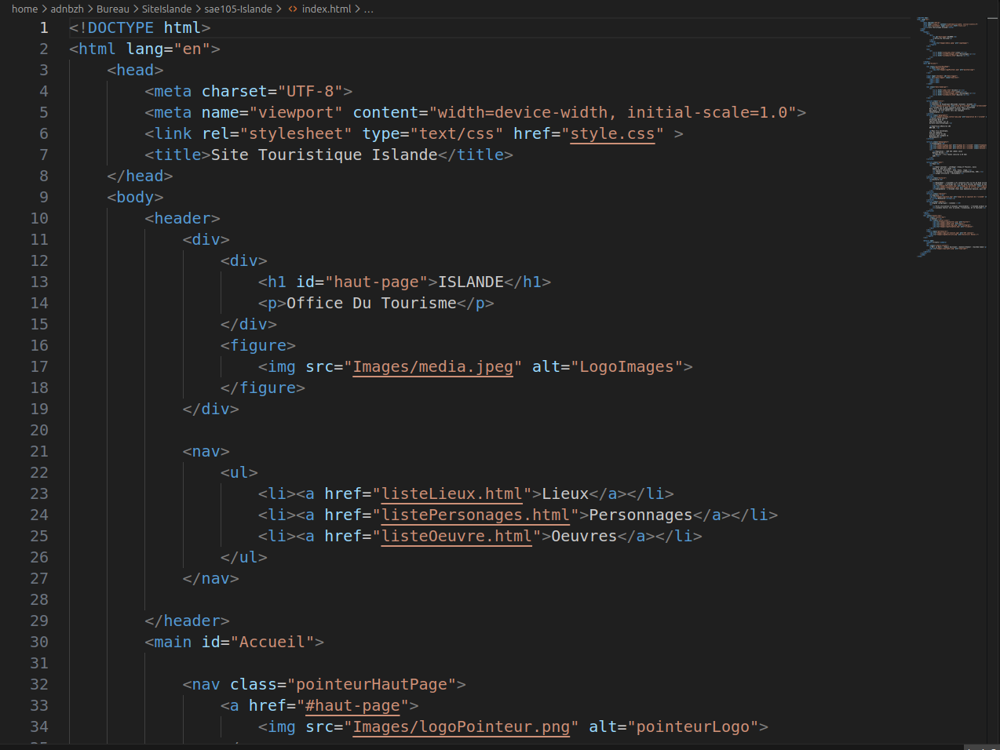

À propos du Projet
Ce projet en équipe avait pour but de nous faire créer, de la conception, du maquettage au développement un site internet en suivant un cahier des charges.
Nous avons du mobiliser nos connaissances en HTML et en CSS et nous coordonner pour atteindre les objectifs fixés et bien répartir le travail.
Défis Relevés
- Developper un site internet responsive
- Créer une charte graphique cohérente
- Réaliser un maquettage détaillé
- Suivre un cahier des charges
Technologies Utilisées
HTML
Langage de balisage pour la structure du site
CSS
Langage de style pour le design du site
Figma
outil de conception et de maquettage
Git
Systeme de gestion de version
Résultats et Apprentissages
95%
Fonctionnalités Implémentées
6/10
respet du cahier des charges
7/10
Cohérence graphique
Ce que j'ai appris
Ce projet m'a permis de me familiariser avec des outils collaboratif tel que git et à collaborrer pour passez de prototypes à un site internet fonctionel tout en s'assurant de bien se coordooner avec les membres
Galerie du Projet



×